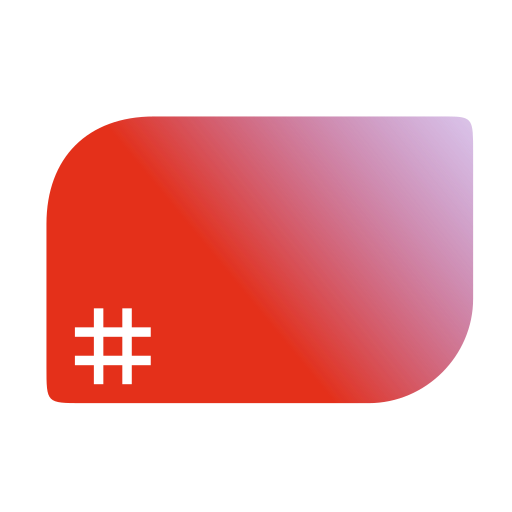

Hello! I'm another person that makes stuff
Projects
Aqabler is an implementation of AQA assembly allowing students to actually 'run' assembly
|  | Aqabler |
| Play with AQA Assembly code |
I've contributed to Mu, a great editor for Python with built-in support for the micro:bit and other MicroPython devices
 |
Mu |
| A simple Python editor for beginner programmers |